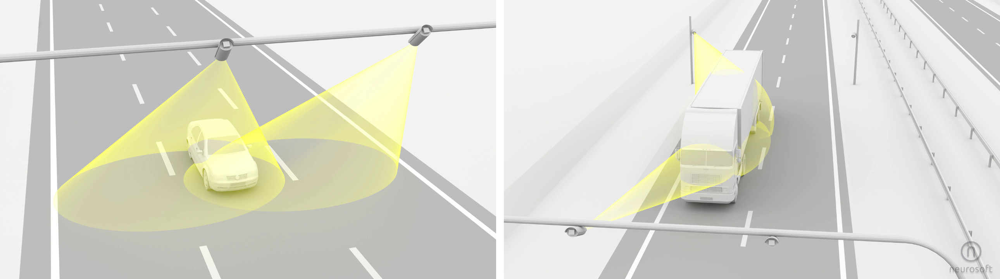

2. Funkcje¶
Funkcje realizowane przez system można podzielić na trzy grupy:
Etykieta |
Funkcja |
Opis |
|---|---|---|
|
podstawowa |
funkcje główne, dla których system został skonstruowany (funkcje kluczowe) |
|
rozszerzenie |
funkcje dodatkowe, rozszerzające działanie funkcji podstawowych; funkcje te mogą być aktywowane opcjonalnie |
|
pomocnicze |
funkcje pomocnicze, wykorzystujące w sposób pośredni funkcje główne bądź dodatkowe, usprawniające działanie systemu; funkcje te mogą być aktywowane opcjonalnie |
2.1. Detekcja¶
BASIC
Polega na automatycznym wykryciu przejazdu pojazdu w polu widzenia kamery (ang. free-flow). Kamera powinna być ustawiona w taki sposób, by możliwe było odczytanie numeru rejestracyjnego. Detekcja działa dla pojazdów obserwowanych zarówno z przodu jak i z tyłu, bez względu na kierunek poruszania się. Detektor wybiera ze strumienia wideo jedno ujęcie (zdjęcie), w którym wykryty pojazd jest najlepiej widoczny → posiada czytelną tablicę rejestracyjną oraz widać na nim wizerunek kierującego.
EXTENDED
W konfiguracji rozszerzonej możliwe jest wykrywanie pojazdów nie posiadających tablicy rejestracyjnej, ew. których tablica jest nieczytelna – taki mechanizm zwany jest VLOOP → wirtualna pętla.
2.2. Numer rejestracyjny¶
BASIC
Polega na automatycznym wykryciu lokalizacji tablicy rejestracyjnej w przetwarzanym obrazie oraz odczytaniu jej treści. Wynik rozpoznawania to ciąg znaków alfanumerycznych, w tym także specjalnych znaków diakrytycznych występujących w niektórych krajach – np. Ä, Ë, Ö itp. Rozpoznany ciąg znaków zawiera także spację, która reprezentuje każdy separator. Wynikiem rozpoznawania jest także informacja o pozycji i rozmiarze tablicy w obrazie źródłowym.
EXTENDED
Oprócz sekwencji znaków system potrafi także określić typ tablicy na podstawie jej składni. Dzięki temu możliwe jest dodatkowo oznaczenie pojazdu np. jako pojazdu uprzywilejowanego (w Polsce to odpowiedni prefiks), ew. miejsca rejestracji (kod miejscowości). Rozpoznawane są także tablice indywidualne.
2.3. Kategoria¶
EXTENDED
Polega na automatycznym rozpoznaniu kategorii pojazdu wyłącznie na podstawie zdjęcia. System potrafi rozróżniać następujące kategorie:
Kod |
Znaczenie |
|---|---|
0 |
nieznany (wykrycie kategorii nie było możliwe) |
3 |
ciężarowy |
5 |
autobus |
7 |
osobowy |
10 |
motocykl (tylko, gdy aktywny VLOOP) |
11 |
dostawczy do 3.5 t |
Określenie kategorii pojazdu na podstawie obrazu wymaga, aby w obrazie była widoczna sylwetka przodu (lub tyłu) pojazdu. Problemem mogę być warunki nocne, gdzie kamera dostarcza zdjęcie tablicy wykonane w podczerwieni – poza tablicą nic nie jest widoczne. Jeżeli warunkiem koniecznym jest rozpoznawanie kategorii również w nocy niezbędne jest zastosowanie dodatkowego, specjalnego doświetlenia.
2.4. Marka i model¶
EXTENDED
Polega na automatycznym rozpoznaniu producenta oraz jego wersji modelowej wyłącznie na podstawie zdjęcia pojazdu. Algorytm działa dla zdjęć wykonanych z przodu oraz z tyłu pojazdu – tak, aby była widoczna tablica rejestracyjne. Wynik rozpoznawania to dwie etykiety tekstowe: nazwa producenta + nazwa modelu, przykładowo audi + q5. System rozpoznaje ~140 różnych producentów oraz niemal 1900 różnych modeli.
2.5. Kolor¶
EXTENDED
Polega na automatycznym oszacowaniu koloru pojazdu na podstawie obrazu przodu. Wyznaczanie koloru działa wyłącznie dla zdjęć dziennych, w momencie gdy kamera pracuje w trybie kolorowym. Rozpoznawanie koloru może być zaburzone przez mechanizm „równoważenia beli” i jest zależne od użytego typu kamery. Wynik działania rozpoznawania to nazwa koloru podstawowego:
Kod |
Znaczenie |
|---|---|
yellow |
żółty |
red |
czerwony |
green |
zielony |
blue |
niebieski |
black |
czarny |
grey |
szary |
Dodatkowo, do koloru podstawowego są dodawane modyfikacje dark → „ciemny”, oraz light → „jasny”.
2.6. Kierunek¶
BASIC
Poprzez analizę wielu sekwencji zdjęć określony może być kierunek poruszania się pojazdu – system wyznacza wartość kierunek generując następujące wartości:
Kod |
Znaczenie |
|---|---|
+1 |
Zgodny z oczekiwanym kierunkiem ruchu na tym pasie ruchu |
0 |
Nieokreślony, ew. pojazd stoi |
-1 |
Przeciwny do oczekiwanego kierunku ruchu na tym pasie - pojazd jedzie pod prąd |
2.7. Pas ruchu¶
BASIC
Pars ruchu określany jest poprzez wskazanie w kadrze z kamery linii rozdziału między pasami. Na etapie konfiguracji można zdefiniować liczbę pasów ruchu jakie obserwuje kamera (1÷4). Do każdego pasa ruchu dowiązuje się także oznaczenie w postaci etykiety: L0, L1, L2 …, która używana jest następnie w metadanych pomiarowych. Przyjmuje się przy następującą konwencję:
Kod |
Znaczenie |
|---|---|
|
pobocze (najczęściej nie występuje) |
|
pas wolny, w Europie najbardziej wysunięty na prawo (zawsze występuje) |
|
pas „do wyprzedzania”, w Europie na lewo od pasa |
|
pas „do wyprzedzania”, w Europie na lewo od pasa |
… |
Dla karów z ruchem lewostronnym konwencja jest podobna z tym, że pas L1 jest pasem najbardziej wysuniętym na lewo.
2.8. Kraj¶
EXTENDED
Kraj pochodzenia pojazdu określany jest na podstawie cech geometrycznych oraz zawartości tablicy rejestracyjnej. System przystosowany jest do jednoczesnego rozpoznawania numerów z wielu krajów, jednak użytkownik musi wybrać jeden z poniższych regionów – rozpoznawanie jest ograniczone do krajów tylko z tego regionu:
Kod |
Znaczenie |
|---|---|
AFRI |
Afryka 1 |
AMEC |
Ameryka Centralna 1 |
AMEN |
Ameryka Północna 2 (Stany Zjednoczone, Kanada) |
AMES |
Ameryka Południowa 1 |
ASIA |
Azja 2 |
AUOC |
Australia i Oceania 3 |
EURO |
Europa |
MIDE |
Bliski Wschód 1 |
Kraj pochodzenia oznaczany jest przy użyciu dwuliterowego kodu kraju zgodnie z ISO 3166-1 alfa-2 – np. PL oznacza Polska.
2.9. Prędkość¶
EXTENDED
Prędkość poruszania się pojazdu wyliczana jest na podstawie analizy przesunięć pozycji środka tablicy rejestracyjnej w kolejnych klatkach strumienia wideo. System posiada mechanizm automatycznego wyznaczania, niezbędnych do przeliczeń, parametrów układu pomiarowego (pozycja kamery względem, kąt patrzenia, powiększenie, itp.) przez co użytkownik nie musi takich danych podawać podczas instalacji.
Dokładność wyliczania prędkości w taki sposób zależy od wielu czynników i ogólnie służy do celów statystycznych – nie może być używana np. do celów wykrywania wykroczeń.
2.10. Towary niebezpieczne¶
EXTENDED
Pojazdy przewożące towary niebezpieczne rozpoznawane są w oparciu o detekcję i rozpoznawanie zawartości tablicy ADR, która powinna być zamontowana na przodzie ew. na tyle pojazdu. Tablica taka umieszczana jest na pojazdach w krajach, które są sygnatariuszami międzynarodowej konwencja dotyczącej drogowego przewozu towarów i ładunków niebezpiecznych (fr. L’Accord européen relatif au transport international des marchandises Dangereuses par Route).
Tablica ADR zawiera dwa kody (rozpoznawane przez system), które określają numer rozpoznawczy niebezpieczeństwa oraz numer rozpoznawczy materiału. Dodatkowo system wykrywa obecność tzw. „pustych tablic ADR”, a także tablic oznaczających przewóz odpadków (teksty Odpady oraz A).
2.11. Wiele kamer¶
EXTENDED
System może uwzględniać konfiguracje pomiarowe, w których wiele kamer obserwuje jedno miejsce detekcji. Wówczas może się zdarzyć, że ten sam pojazd zostanie wykryty i zidentyfikowany przez kilka kamer równocześnie. Dotyczy to konfiguracji, w których np. dwie kamery obserwują dokładnie ten sam punkt, ew. dwie kamery obserwują zarówno przód jak i tył tego samego pojazdu.
W obu przypadkach system potrafi powiązać pomiary z poszczególnych kamer i ostatecznie generuje informację o detekcji i identyfikacji tylko jednego pojazdu.
2.12. Alerty¶
AUXILIARY
Na podstawie danych o zarejestrowanych pojazdach możliwe jest zdefiniowanie powiadomień – alertów – o przejeździe pojazdu posiadającego wskazane cechy, np. pojazdu poszukiwanego (wskazany numer rejestracyjny) czy pojazdu niedozwolonego (pojazd klasy „ciężarowy”). Alerty generowane mogą być na terminalu bądź w systemie centralnym.
Alert może być natychmiast po utworzeniu przesłany asynchronicznie do systemu nadrzędnego w postaci powiadomienia. Forma powiadomienia jest konfigurowalna.
2.13. Monitorowanie¶
AUXILIARY
Nadzór nad sprawnością elementów infrastruktury pomiarowej jest kluczowym zdaniem z perspektywy wiarygodności danych. W systemie zaimplementowano dwukierunkowy mechanizm kontroli sprawności:
push - regularne przesyłanie przez wybrane urządzenia (terminale) informacji o swoim stanie, do centrali →
status,pull - regularne odpytywanie przez centralę o stan wszystkich urządzeń mających wpływ na kondycję infrastruktury pomiarowej.
Powyższa, dualna metodologia pozwala na szybkie reagowanie na usterki ale także umożliwia przeglądanie zapisów z historii działania systemu i wykrywanie zaburzeń wywołanych chwilową niesprawnością urządzeń pomiarowych.